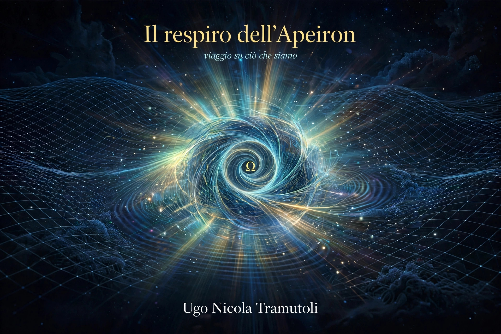

Cedo....
Sì come il sole
Colorando d'alba
I suoi tramonti
Cede alla notte...

TRAM HYSY
Poesia · Nugae
U. TRAM. · dei desideri (Liricazze ad mentula canis)
“επαμεροι· τí δé τις; τí δ’ ου’ τις; σκια’ς óναρ ανθρωπος” (Pitiche, VIII, IV, 95-96)
La parola poetica racchiusa in queste pagine non è un contenitore passivo, ma un campo di forze in costante attrito. Leggere Il mio Tao significa entrare in uno spazio in cui l'esistenza non viene misurata con i rassicuranti orologi della logica, ma viene registrata attraverso strappi, tensioni opposte e collassi relazionali. È la dinamica del Wuji e del Taiji applicata al perimetro di una vita umana: un fluire continuo che rifiuta le illusioni e disinnesca ogni autocompiacimento.
In questo vuoto, la percezione stessa del tempo subisce continue aberrazioni. La logica rigorosa si scontra con l'attrito dei passi lenti nella sera, dove le ore dell'attesa corrono esasperatamente lente. La memoria non funge da consolazione, ma opera come una spietata forza di gravità a cui l'individuo si arrende ad ogni ritorno, un ciclo ineluttabile che cristallizza l'istante in cenere. L'angoscia diviene una dinamica inarrestabile, simile a neri cavalli che svelano dalla nebbia la loro corsa verso lo schianto frontale con il mattino.
Questo è un Tao privo di dogmi. Una registrazione cruda dell'esistere, dove la parola trattiene la vita un istante prima che il tempo azzeri il sistema.
Ugo Nicola Tramutoli ha trascorso la vita a misurarsi con l'architettura logica e fisica della realtà. Ingegnere elettrotecnico e nucleare, specializzato in Teoria dei Sistemi Evolutivi, ha diviso la sua carriera tra il rigore della progettazione di impianti in ENEL, la presidenza del Comitato Elettrotecnico Italiano e, oggi, la faticosa ricerca teorica volta a costruire un ponte definitivo tra la metafisica e la fisica.
Eppure, dietro l'inflessibilità delle equazioni e la ricerca sull'Indeterminato, c'è sempre l'uomo.
Le poesie racchiuse in queste pagine non hanno la presunzione di scalare le vette della letteratura, ma nascono da un'urgenza molto più profonda. Sono frammenti del mio personalissimo Tao: strappi, attese, memorie, paure e slanci di tenerezza che la matematica non può contenere.
Ho voluto stamparle per lasciare una traccia del mio animo, nuda e sincera, alle persone che danno senso al mio tempo. Questo piccolo libro è per mia moglie Pilla, compagna di una vita intera, per i miei figli, per Chiara, per i miei parenti e per gli amici più cari. È un dono per voi. Spero che, sfogliando queste pagine nel tempo, possiate ritrovare il mio respiro, il mio sorriso e l'infinito affetto che mi lega a ciascuno di voi.
Per ricordarvi che, al di là di ogni formula o teoria sull'Universo, la vera gioia della vita siete voi.